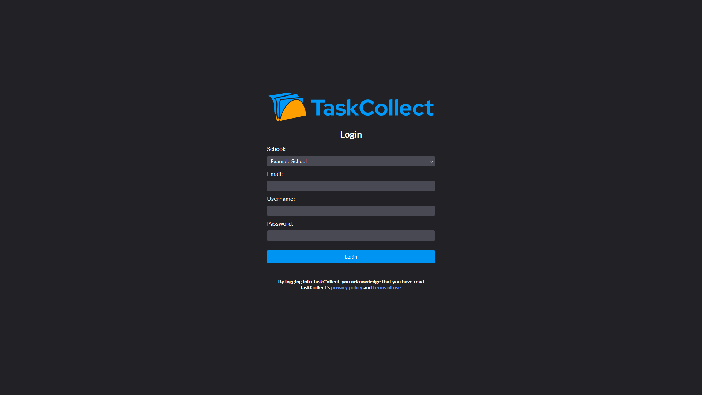
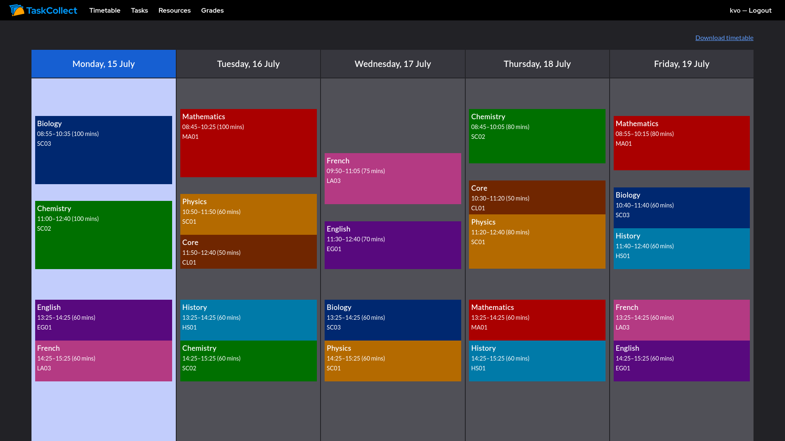
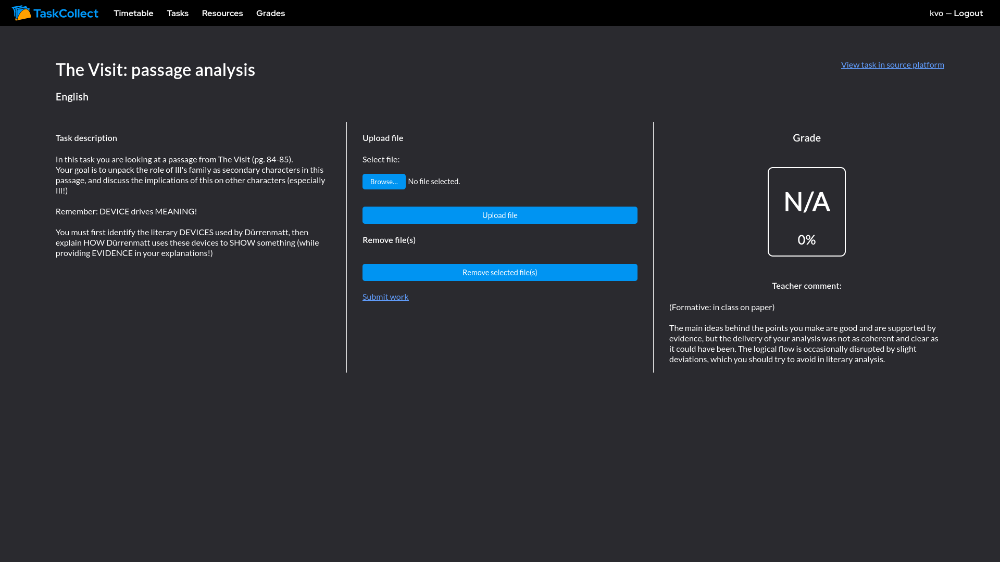

TaskCollect is a lightweight, web-based, multiplexed frontend for online educational platforms. This means that you can log into TaskCollect through a web browser, and use existing educational platforms (that you may be enrolled into) as if they were a single, uniform, intuitive platform.
Since TaskCollect is currently developed as a web-based frontend, you can either use an existing setup of TaskCollect (called an instance of TaskCollect) or set it up on your own computer (i.e. self-host TaskCollect).
If you are accessing an existing instance of TaskCollect, simply go to the URL of the existing instance, and you will be greeted with the login page!
If you want to self-host TaskCollect, you will need to follow the self-hosting steps to setup TaskCollect on your computer. After you have done so, you can start the TaskCollect web server, then access TaskCollect via the following URL: http://localhost:8080/
When you login, you will need to select your institution (i.e. school/university). This allows TaskCollect to select all the supported educational platforms used by your institution and connect to them.
You will also need to provide a username and a password. The email field is optional for most institutions, howver, students and staff at the following institutions are required to enter their institution email for sign-in:
This is a result of how authentication works for the educational platforms in use at these institutions.
For some institutions, sign-in requires extra information that must be provided through the settings page (after first sign-in) to enable full institution support:
When you successfully sign in to TaskCollect, you will be given a reasonably simple interface. There are a few main components:
The information presented in all pages update on reload.
There are also user interfaces for viewing and working with individual tasks and resources. In particular, this includes methods for work upload and submission.
The design and use of these components is fairly straightforward as of TaskCollect v1. The interface has been designed to be as simple and intuitive as possible. Version 2 will introduce some additional features which, although will be simple, will introduce new ways of working with educational platforms which will be detailed here.